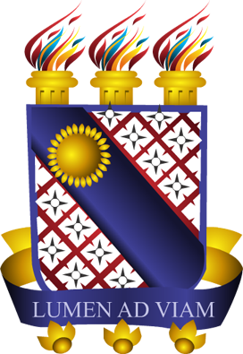
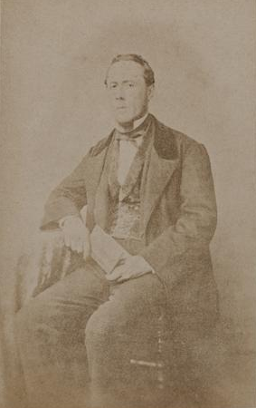
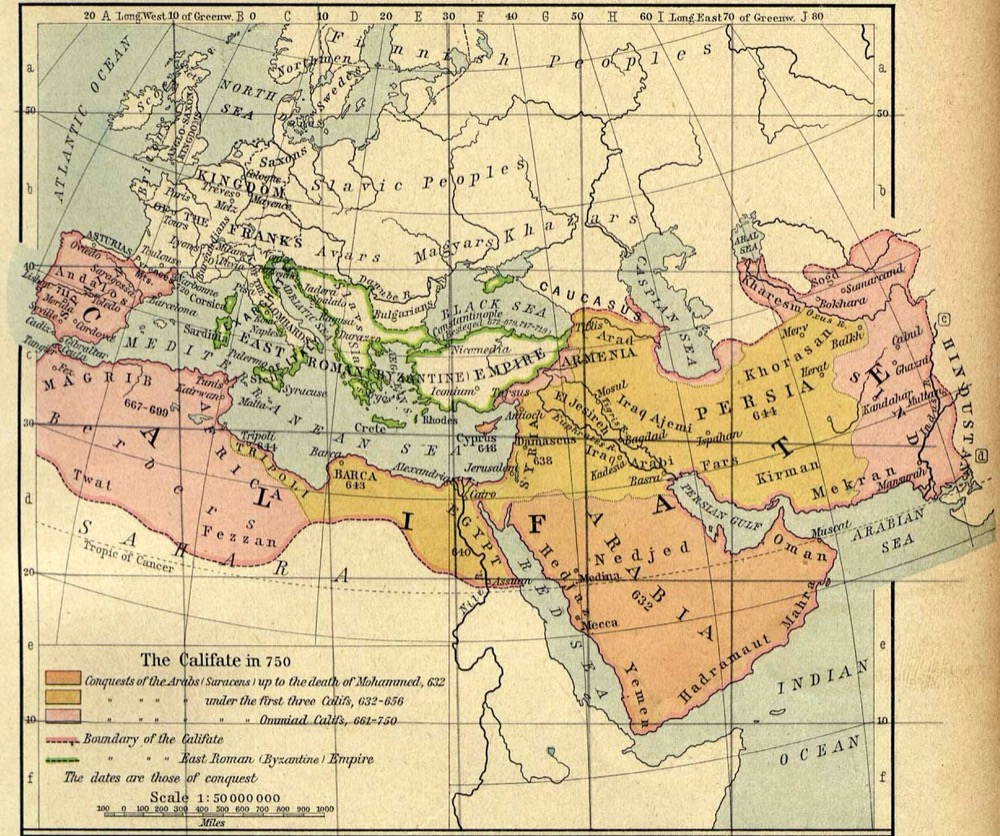
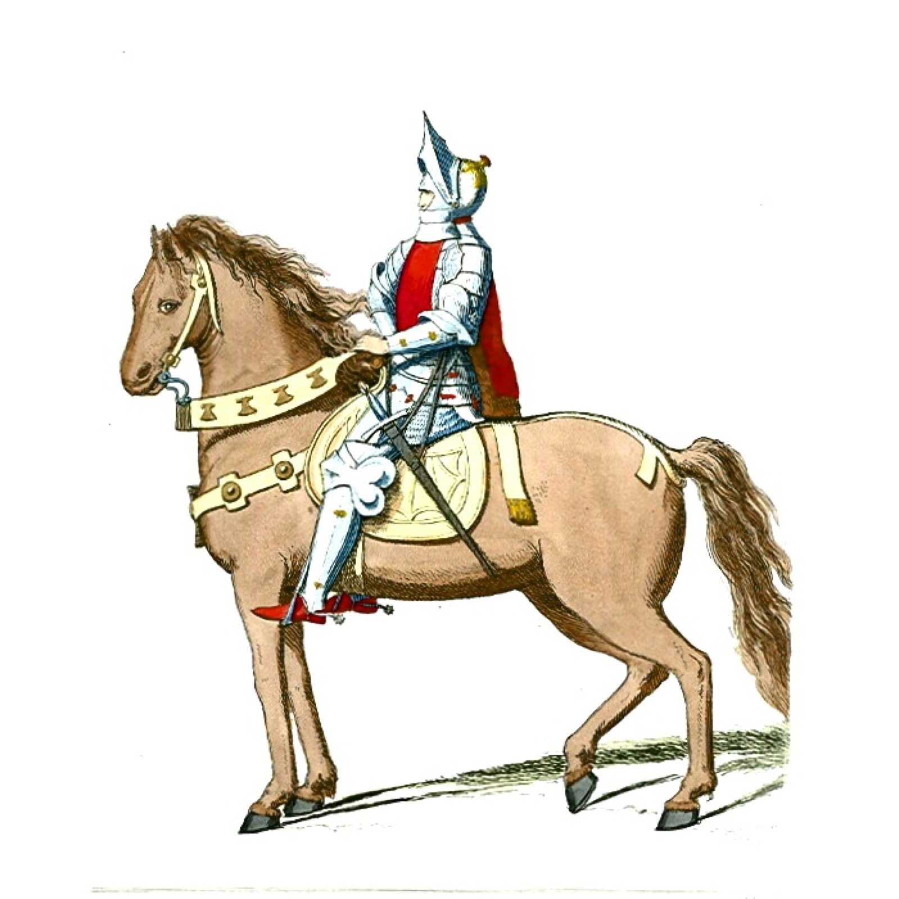
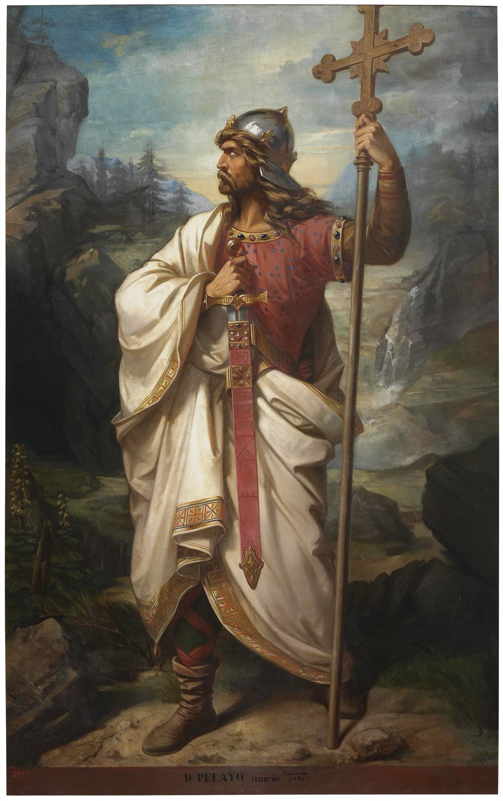

Alexandre Herculano: amor, fé, heroísmo e tragédia na Idade Média.
Eurico, o Presbítero narra um amor impedido, uma vocação religiosa, uma guerra e os conflitos íntimos de um homem dividido entre o que deseja e o que lhe é imposto.
“Quando nossos sentimentos entram em conflito com nossos deveres, até que ponto somos livres para escolher?”

Um país dividido sobre o poder do rei, a Constituição e o papel da Igreja. O liberalismo marca a vida pública e a obra de Herculano.
Num país em reconstrução, os românticos procuram na História as raízes de uma identidade nacional.
Ela aparece como origem: tempo de fé, de luta e de formação coletiva. Recuperá-la na literatura era uma forma de pensar o presente.
Emoção intensa. Em Eurico: o sofrimento do protagonista conduz a narrativa.
O amor como absoluto. Em Eurico: Hermengarda é amada e perdida.
O herói é grande e ferido. Em Eurico: o sacerdote que vira guerreiro.
Passado como refúgio e origem. Em Eurico: Península Ibérica do século VIII.
A busca de uma identidade coletiva. Em Eurico: a resistência contra a invasão.
Desejo contra regras sociais. Em Eurico: amor contra obstáculos e voto religioso.
Não é uma lista solta: cada traço do Romantismo ganha forma no modo como Eurico é construído.
Época, sociedade, conflitos e acontecimentos de um tempo real.
Personagens, diálogos, sentimentos e construção narrativa inventados pelo autor.
“Um romance pode nos ajudar a compreender o passado sem ser um documento histórico?”
Eurico, o Presbítero
Alexandre Herculano
Romance histórico · Romantismo português
Edição utilizada pela equipe: Martin Claret, coleção “A Obra-Prima de Cada Autor”. ISBN 978-85-7232-997-2. [Ano, edição e responsável pela tradução/adaptação: conferir na página de créditos.]

O mapa mostra a extensão do domínio muçulmano por volta de 750, já após a conquista da Península.
Escrito no século XIX, o romance oferece uma representação romântica desses fatos, não uma descrição neutra e completa da História medieval.
Presbítero é um sacerdote. Em Eurico, a condição sacerdotal não é um detalhe: é o centro do conflito.
O compromisso religioso assumido.
O sentimento por Hermengarda, que não desaparece.
As obrigações sociais e religiosas.
A experiência íntima que move o herói.
O conflito não é “religião × guerra”: o sacerdote ama, sofre e, depois, empunha armas; as dimensões se cruzam.
Eurico, jovem nobre godo, ama Hermengarda. Obstáculos impedem a união.
Ferido pela perda, Eurico abandona o mundo e entra no sacerdócio.
Com a invasão, surge o Cavaleiro Negro, figura misteriosa na luta contra os invasores. Os acontecimentos conduzem a um desfecho trágico.
Elo central: a história pessoal de Eurico e a crise histórica do reino visigótico se entrelaçam: o drama íntimo ganha dimensão coletiva.
Protagonista: sacerdote, poeta e guerreiro, marcado pelo sofrimento amoroso e pelo conflito entre desejo e dever.
Função: centro do drama íntimo.
A mulher amada por Eurico. Sua história dá à narrativa a dimensão trágica.
Função: motor do conflito amoroso.
Figura associada à resistência visigótica e à luta contra os invasores.
Função: dimensão coletiva e heroica.
Personagem ligado ao universo político e militar visigótico.
Função: ligação com a vida política e militar.
Há ainda o Cavaleiro Negro, figura-chave que será analisada no slide seguinte.

Leitura crítica: o conflito exterior (a guerra) pode ser lido em diálogo com o conflito interior do protagonista.
Idealização amorosa e obstáculos à realização dos sentimentos.
No enredo: Eurico e Hermengarda.
Tensão entre vocação religiosa, desejo e escolhas pessoais.
No enredo: o sacerdócio de Eurico.
A resistência visigótica e a recuperação literária do passado.
No enredo: a luta contra a invasão.
A dimensão trágica e os conflitos do herói.
No enredo: o desfecho dos protagonistas.
Descrições de lugares históricos criam a ambientação medieval.
Nas passagens de guerra, a linguagem se eleva e dá grandeza aos feitos.
A interioridade do herói aparece na expressão da dor e da lembrança.
Atmosferas sombrias reforçam o destino dos personagens.
Como ler: descrição mostra o que a narrativa apresenta; caracterização diz quem é o personagem; interpretação crítica é o que nós concluímos disso. [Inserir aqui um trecho da edição Martin Claret, com página.]
Portugal, século XIX.
Península, século VIII.
É uma análise crítica, não uma tradução direta: não há correspondência política exata entre cada elemento do romance e a realidade de 1844.

Eurico, o Presbítero articula conflito amoroso, vocação religiosa, heroísmo e representação da História numa narrativa romântica marcada por tensões individuais e coletivas.
“Eurico é vencido pelas circunstâncias históricas ou pelos conflitos que carrega dentro de si?”
HERCULANO, Alexandre. Eurico, o presbítero. São Paulo: Martin Claret, [ano da edição]. (Coleção A Obra-Prima de Cada Autor). ISBN 978-85-7232-997-2.
SARAIVA, António José; LOPES, Óscar. História da literatura portuguesa. Porto: Porto Editora. [conferir edição consultada]
MOISÉS, Massaud. A literatura portuguesa. São Paulo: Cultrix. [conferir edição consultada]
LUKÁCS, Georg. O romance histórico. São Paulo: Boitempo, 2011.
COLLINS, Roger. The Arab Conquest of Spain, 710–797. Oxford: Blackwell, 1989.
Retrato de Alexandre Herculano, c. 1850–60, Francisco Eugénio Rostaing — domínio público.
“The Califate in 750”, W. R. Shepherd, Historical Atlas, 1911 — domínio público.
“Don Pelayo, rey de Asturias”, Museo del Prado — domínio público.
Castelo de Guimarães — CC BY-SA 4.0. Cavaleiro armado a cavalo — conforme ficha do arquivo.
Brasão da UECE — arquivo da Wikimedia Commons; substituir pelo arquivo oficial institucional.
Obrigada! Perguntas e comentários?